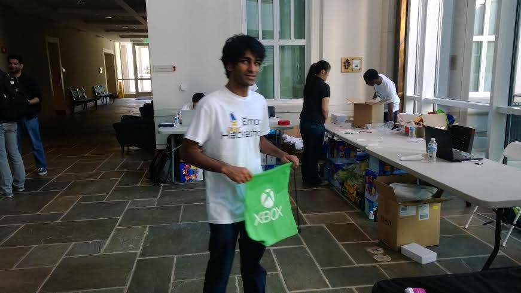

Mourya Meda
Software Engineer
ABOUT ME
I am Mourya Meda, a recent graduate from Emory University with a Computer Science (B.S) degree. I enjoy melding history and programming.
Currently, I just finished deploying my new web app built on React.js using Lambda and API Gateway for serverless API!
SKILLS
MOST PROFICIENT IN:
- Java
- Groovy
- C
EXPERIENCED IN USING:
- Python
- React.js / Node.js
- HTML / CSS / SASS
- mySQL
- x86 Assembly
TOOLS AND FRAMEWORKS:
- Lambda and API Gateway (in progress...)
- CloudFront (in progress...)
- DynamoDB
- Cognito
- S3
- Git
- Gradle
- Linux
- JUnit
- Jenkins
- Jira
WORK EXPERIENCE
IBM CLOUD VIDEO - SOFTWARE ENGINEER
JUNE 2016 - PRESENT
IBM CLOUD VIDEO (Clearleap) is a company that provides reliable and scalable video streaming services and solutions globally. As a Software Engineer, I am able to work maintaining and testing SaaS video streaming software using Java and Groovy on Grails. I played a vital role in extending automation framework for regression and end to end testing for APIs and our Cloud Video Solutions. I also designed and implemented a custom package generator framework, which extends to support multiple clients. This framework now generates custom .xml, .csv, and .json, which satisfy both the CableLabs ADI specifications and the clients' metadata. These clients include HBO Nordic, HBO Espana, Blizzard, CBC, and much more.
EMORY UNIVERSITY - TECHNOLOGY ASSISTANT
JANUARY 2015 - MAY 2016
For my work-study during school, I had the opportunity to work in Computing Center at Cox Hall and the TechLab inside. I maintained and assisted with the 3D printers and taught other students how they work. Furthermore, I managed and assisted with software applications, including iMovie, Adobe Premiere Pro, SMART technologies, Windows, and OSX. I also guided university’s clients in reserving classrooms and demonstrate the use of applications available. My other responsibilities included ensuring the hardware of both PCs and Macs are well maintained and debugged and troubleshoot any issues.
IBM CLOUD VIDEO (CLEARLEAP) - AUTOMATION INTERN
SUMMER 2015, WINTER 2015
I interned at Clearleap prior to IBM's acquisition. As part of the automation team, I designed and created data models to hold the contents of the ClearFlow product which is used to automate numerous test cases for the QA team. This was the time when I was exposed to the Agile Environment, which entailed retrospectives, backlog grooming, and sprint planning every week in order to meet the requirements and deadlines for the build releases. During my time as an intern, I was recognized for my achievements and was the winner of 2 CCA (Clear Choice Awards) for recognition of outstanding achievement and progress within the company.
PROJECTS
WATCHTHIS!
SEPTEMBER 2017
It began when I was told I don't know anything about pop culture. I realized I should build myself a web app that allows me to look up movies and store them to watch next. Fortunately, it also coincided with my desire to learn serverless framework and React.js. So I decided to combine both into this project. WatchThis! is a responsive React.js app that expands the functionality of TMDb Movie Search app. It uses the Serverless REST API (Node.js) I built which makes use of AWS Platform (Lambda and API Gateway). WatchThis also utilizes DynamoDB for database and Cognito for user authentication and securing the APIs
 -
-
LANGUAGE SWITCH
AUGUST 2017
During my time in IBM, I had the opportunity to work with Watson AI APIs. This also branched in learning more about Bluemix (IBM's cloud platform)
which is based on Cloud Foundry open technology and runs on SoftLayer infrastructure.
This project utilizes Watson’s Language Translator API to translate a .srt file into one of the supported languages.
It was designed under Django framework and deployed in Bluemix.
OCEAN SHIP LOGBOOKS 1750-1850
DATA MINING
SPRING 2016
A semester long project in my Data Mining class. After the digitlization of ocean ship logbooks,
I was thrilled to be able to use some of the skills and algortithms I learned during class and apply them.
This project highlights the following three main objectives:
1) Routes: Provides a visualization of all the logbook entries on a map. Utilized matplotlib and basemap modules
2) Clusters: Holds the dataset using NumPy and uses sklearn libraries to run the KNeighborsClassifier to cluster the entries
3) Classification: Utilizes NumPy and sklearn to implement Gaussian Naive Bayes to create a classification model

LEADERSHIP EXPERIENCE
HACKEmory - HARDWARE LEAD
2012 - 2016
As a Hardware Lead in HACKEmory, I worked with a team to allocate up to $12,000 from sponsors including Microsoft, Coca-Cola, Wolfram, Google, Twilio and many others for the Hackathons. Lead and supervised the two day Hackathon event with over 200 students from various backgrounds. I taught basic architecture of a simple circuit and the more advanced capabilites of a Arduino processor to other students. Furthermore, I partnered with Arduino microprocessors to build projects which involved manipulation of LED lights based on variables such as music and video
 - HACKEmory
INTERESTS
ROCK CLIMBING / GYMNASTICS / MUAY THAI / TRAVEL
I enjoy the outdoors! I take any chance I can get to do something active outside. I recently created a group in Atlanta called Play Outside to have weekly activities! Play with us if you are interested!